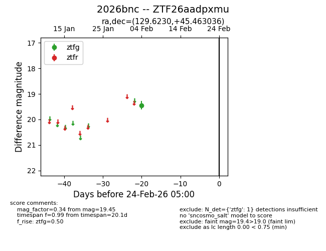
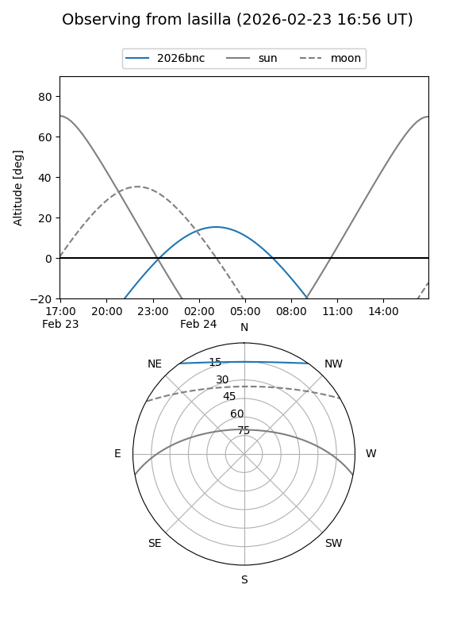
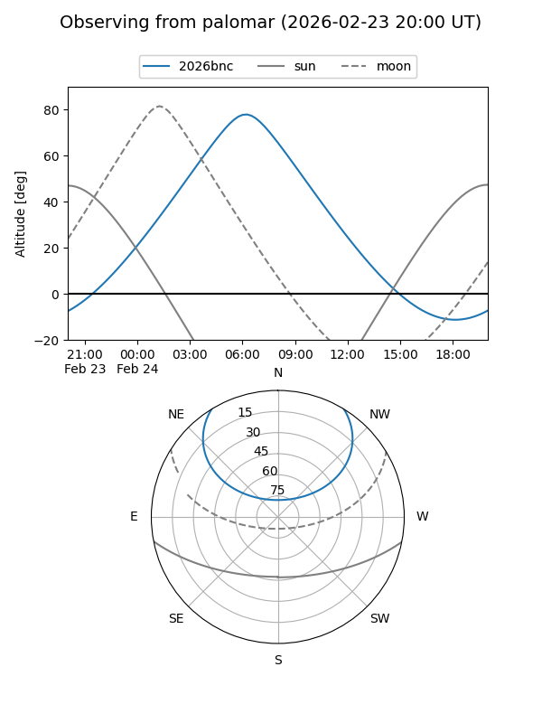

2026bnc
Target 2026bnc at 2026-02-24 09:08
Aliases and brokers:
FINK: link
Lasair: link
ALeRCE: link
TNS: link
YSE: link
alt names
ZTF26aadpxmu (ztf,fink_ztf)
2026bnc (tns,yse)
Coordinates:
equatorial (ra, dec) = 129.6230,+45.46304
equatorial (HMS+DMS) = 08:38:29.53,+45:27:46.93
galactic (l, b) = (174.8695,+37.30892)
Flags:
Photometry:
last ztfg=19.45
1 ztfg detections
Lightcurve

Visibility


Additional plots